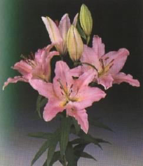

 O Mistério da Terceira Pessoa da Santíssima Trindade,
não deve constituir um preocupante desafio somente para aguçar a
curiosidade das pessoas, instigando um sentimento de descoberta,
estimulando uma busca frenética de conhecimento e informações,
para delinear um esboço mais amplo e profundo sobre a realidade
do ESPÍRITO. Esta dimensão pode também ser desejada, é
natural, mas primordialmente a procura deve ser realizada como
maneira de demonstrar afeto e amor ao PARÁCLITO CONSOLADOR.
Na verdade, o véu misterioso que encobre o ESPÍRITO DO SENHOR,
deve convidar-nos a uma reflexão maior e mais profunda sobre a
nossa própria vida, suscitando a necessidade de imprimirmos mais
santidade nas ações, empreendendo um processo de efetiva
conversão do coração, a fim de criarmos um ambiente propício
para dilatarmos uma sincera devoção ao ESPÍRITO DE DEUS, a fim
de que ELE encontre em cada pessoa um terreno adequado e possa
operar com liberdade, e dessa forma, possa ser compreendido e
admirado pelo valor incomensurável de suas Obras, pela Efusão
dos Carismas que graciosamente derrama sobre toda humanidade e
pelo impressionante brilho de Sua Divina Luz, que guia, ilumina,
protege, vivifica e santifica, todos aqueles que buscam o seu
inestimável e precioso auxílio.
O Mistério da Terceira Pessoa da Santíssima Trindade,
não deve constituir um preocupante desafio somente para aguçar a
curiosidade das pessoas, instigando um sentimento de descoberta,
estimulando uma busca frenética de conhecimento e informações,
para delinear um esboço mais amplo e profundo sobre a realidade
do ESPÍRITO. Esta dimensão pode também ser desejada, é
natural, mas primordialmente a procura deve ser realizada como
maneira de demonstrar afeto e amor ao PARÁCLITO CONSOLADOR.
Na verdade, o véu misterioso que encobre o ESPÍRITO DO SENHOR,
deve convidar-nos a uma reflexão maior e mais profunda sobre a
nossa própria vida, suscitando a necessidade de imprimirmos mais
santidade nas ações, empreendendo um processo de efetiva
conversão do coração, a fim de criarmos um ambiente propício
para dilatarmos uma sincera devoção ao ESPÍRITO DE DEUS, a fim
de que ELE encontre em cada pessoa um terreno adequado e possa
operar com liberdade, e dessa forma, possa ser compreendido e
admirado pelo valor incomensurável de suas Obras, pela Efusão
dos Carismas que graciosamente derrama sobre toda humanidade e
pelo impressionante brilho de Sua Divina Luz, que guia, ilumina,
protege, vivifica e santifica, todos aqueles que buscam o seu
inestimável e precioso auxílio.
 Em dezenas de manifestações sobrenaturais, o
SENHOR convida-nos a penetrarmos no mistério dos Sete Dons do
ESPÍRITO, como caminho e busca de vida em plenitude, para a
realização e concretização de todos os ideais, sobretudo,
para orientar nossa diretriz existencial a fim de podermos
alcançar a felicidade verdadeira.
Em dezenas de manifestações sobrenaturais, o
SENHOR convida-nos a penetrarmos no mistério dos Sete Dons do
ESPÍRITO, como caminho e busca de vida em plenitude, para a
realização e concretização de todos os ideais, sobretudo,
para orientar nossa diretriz existencial a fim de podermos
alcançar a felicidade verdadeira.
Porque o ESPÍRITO CONSOLADOR é que preserva
a alma da má disposição, dos escândalos e das fortes tentações
demoníacas, conduzindo-a em santidade, ajudando-a crescer em
graça e sabedoria, para que não seja arrastada pelos erros que
se espalham perigosamente até na Igreja.
Por isso o SENHOR nos ensina que devemos pedir o
"ESPÍRITO de Conhecimento
ou de Ciência", para não
sermos envolvidos pelas distorções que fazem da Palavra Divina,
involuntariamente por ignorância ou propositalmente com algum
objetivo maléfico, procurando ao contrário, o sentido correto
e real que nos revela o DEUS UNO e
TRINO.
Ensina-nos ainda, a suplicar o PARÁCLITO, pedindo-LHE
que nos conceda o
"ESPÍRITO de Sabedoria", para
que ELE visite a nossa pobreza de espírito e com sua emanação Divina,
conduza nossos passos unicamente para as coisas celestes, que
são permanentes, santas e duradouras.
Implorar pelo
"ESPÍRITO de Compreensão e Inteligência", para curar com seus raios fulgurantes a nossa nulidade,
iluminando o conhecimento, fazendo com que as coisas que pareciam
escuras e fora de alcance, sejam reveladas e descobertas,
permitindo evoluir a nossa alma em direção a Verdade Divina.
Isto porque, o ESPÍRITO SANTO atendendo as nossas
súplicas, iluminará os olhos da alma como um Amigo presente nas
necessidades, dando-nos um rico espírito de percepção, para
penetrarmos no pleno Mistério do CRIADOR, não nos escondendo
nenhum segredo e proporcionando ensinamentos que nenhum espírito
compreende, porque transcende a inteligência humana, entra no
impenetrável e no imperecível, atingindo as profundezas de
DEUS. E todas as coisas que pareciam inatingíveis ao nosso
espírito, serão perfeitamente compreendidas sob a
Divina Luz.
Recomenda o SENHOR que peçamos o "ESPÍRITO de Conselho"
, que nos faz querer a integridade pessoal, a
bondade e a lealdade, que nos permite combater e remover as raízes
do mal: não humilhando ninguém e nem se mostrando superior aos
demais; servindo sempre a causa do bem; aliviando os oprimidos e
injustiçados; não praticando o mal por menor que seja e
procurando ajudar uns aos outros mutuamente; respeitando, temendo
e amando o CRIADOR.
Suplicar também, pedindo o "ESPÍRITO de Fortaleza", pois foi o SENHOR Mesmo quem disse que este Dom
não seria dado somente aos Anjos. Porque ele torna apta as
pessoas a fim de que possam pregar a Palavra Divina com
autoridade e santidade, da mesma maneira que praticar a Tradição
da Igreja com fidelidade, dar testemunho da Verdade com zelo e
coragem, além de infundir forças e perseverança para que sejam
vencidos todos os obstáculos que queiram impedir a trajetória
que nos conduz a DEUS.
Pedir também o "ESPÍRITO
de Piedade", que nos ensina o
conhecimento das coisas santas e nos faz entender que
a piedade é mais forte na submissão, na humildade e na renúncia,
porque transforma as pessoas na direção do modelo Divino,
tornando-as mais puras, simples, semelhantes a lírios
brancos, robustos e perfumados, no jardim do
SENHOR.
E como derradeira súplica, implorar ao DIVINO
ESPÍRITO o "ESPÍRITO
de Temor", que nos ensina a
guardar, honrar e respeitar o Santo Nome de DEUS, aprendendo a
inclinar profundamente a nossa cabeça, para que ELE seja visto;
abaixar o volume e a impetuosidade da nossa voz, para que seja
ouvida a Voz DELE, sobretudo para podermos descobrir as Divinas
Intenções, os Desejos e a Suprema Vontade do CRIADOR; e então,
somente elevando a nossa voz em louvor e honra da gloriosa
Presença do SENHOR e aprendendo a levantar a nossa cabeça,
senão para procurá-LO e para procurar "enxergar" todas
as coisas do Céu ... O "ESPÍRITO de Temor" atua
no interior das pessoas, fazendo-as compreender o quanto a submissão
seduz ao SENHOR, e por "severa"que ela possa parecer,
é a "abertura"
pela qual ELE entra no coração dos fiéis,
induzindo-os a obedecer a Vontade de DEUS.
Por certo, o CRIADOR receberá nossa submissão de santo
temor, como se recebesse uma perfumada e maravilhosa coroa de flores,
e ELE, o DEUS TRINITÁRIO Todo Poderoso, agradecido pelo esforço
desprendido pelos seus filhos, paternalmente mostrará a grandeza
de seu amor infinito, revestindo os fieis com uma invencível
santidade, de maneira que algum traço de "anarquia" ou "comodidade"
que ainda possam existir nas pessoas, sejam eliminados e
dissipados, desaparecendo definitivamente como o orvalho da
manhã que se esvai com a
chegada do Sol.
Com os poderes do ESPÍRITO SANTO, as pessoas
serão como guerreiros audazes, destemidos e cheios de vigor, para
combater o bom combate da fé e da justiça, que os associarão aos
Arcanjos de DEUS, São Miguel, São Gabriel e São Rafael, na
terrível batalha espiritual de todos os dias e do Final dos
Tempos. Repletos de carismas, terão forças e disposição para
perseverar diante dos obstáculos que surgirem, conduzindo com
dignidade e respeito a cruz da existência e através dos
sofrimentos de cada dia e da generosidade do coração,
se tornarão merecidos parceiros no triunfo de NOSSO SENHOR
JESUS CRISTO.

"HOMENAGEM AO ESPÍRITO DE
DEUS"

 ESPÍRITO SANTO, no silêncio e na ternura de
ESPÍRITO SANTO, no silêncio e na ternura de
seus movimentos derrame em
meu coração a sabedoria,
discernimento, perseverança,
fortaleza e o Amor de DEUS,
para incendiar a minha alma
no caminho do direito, da justiça
e do amor fraterno, permitindo
que as Divinas labaredas
harmonizem inteiramente a minha
existência
e a Paz possa habitar em minha vida.
Se quer ouvir belas
músicas sobre o ESPÍRITO SANTO clique na Nota Musical abaixo:
Espirito Enche A MinhaVida
Padre Marcelo
|
Eu Navegarei
Voz daVerdade
|
Espírito
Padre Marcelo
|
Eu Navegarei
A Vigília
|
Espírito Santo
Kleber Lucas
|
Derrama Teu Espírito
Aline & Jamile
|
Próxima
Página 

 Página Anterior
Página Anterior
Retorna
ao Índice